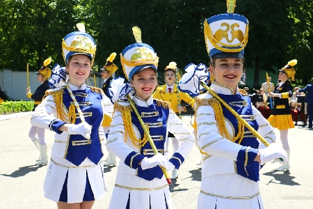

Фестиваль
детского творчества
«Золотая пчёлка» в нашем городе – это
несомненно праздник, который приобрел большую популярность в странах
СНГ и Европе.
Фестиваль
детского творчества
«Золотая пчёлка» в нашем городе – это
несомненно праздник, который приобрел большую популярность в странах
СНГ и Европе.
Из года в год растет престиж и расширяется география
фестиваля, учредителями которого являются Министерство культуры
Беларуси, Могилевский облисполком, управление культуры облисполкома и
Климовичский райисполком.
Инициатором этого прекрасного фестиваля был Иван Андреевич Борщёв, в то
время работавший заместителем председателя Климовичского райисполкома.
Главной причиной зарождения фестиваля было
стремление наладить работу с детьми на более высоком уровне. В 1995
году наши ребята из дома пионеров учувствовали в детском фестивале
«Нотки над Бесядью», который проходил в г.п.
Хотимске. Приехали они тогда оттуда окрыленные и много рассказывали об
увиденном и услышанном.
Тогда и появилась заманчивая идея, которую Иван Андреевич Борщёв
согласовал в благотворительном Лайонс – клубе, одной из
программ деятельности которого и являлась поддержка талантливых детей.
Предложение было воспринято всеми правильно.
Обсудив детали, разработали программу проведения фестиваля,
посвященного Международному
дню защиты детей и пригласили в Климовичи на праздник в 1996 году
ближайших соседей – детские коллективы из Костюковичей,
Кричева и Славгорода – районов области, пострадавших от
аварии на Чернобыльской АЭС, и детский коллектив из российского
города-соседа Шумячи. Участникам и зрителям он понравился. Были и
первые победители.
В 1997 году было решено проводить фестиваль на более широком уровне. И стал вопрос: а как назвать наш фестиваль? Идею тогда подала директор районного Центра культуры Людмила Анатольевна Тимохович. Так и стал он «Золотой пчёлкой». И это не случайно, так как символом города Климовичи является герб с изображением пчелы.
В 1997 году фестиваль был уже региональным. На
праздник
приехали представители девяти районов Беларуси и России. Примечательным
был 1998
год, когда город принял очень талантливый, яркий коллектив из далекой
от нас Тулы.
Благодаря бывшему начальнику Управления культуры Могилевского
облисполкома Михаилу Григорьевичу Дорошкову наш
фестиваль из регионального в 1999 году получил статус областного, а в
2001 г. – Международного.
Первый Международный фестиваль детского творчества «Золотая пчёлка» проводился в год, когда ООН обьявила Десятилетие культуры мира и ненасилия в интересах детей. Праздник детства собрал около 500 участников. Были представлены все области Белоруссии и практически целиком Могилёвская область. Приехали делегации из Кишинёва (Молдова) и Шумячского района (Россия).
В субботу всех обьединил «Вечер дружбы», а в воскресение проходило праздничное шествие, а также состоялся гала-концерт, каждый номер которого зачаровывал зрителей. На площади Великого Октября собралось столько людей, что, казалось, не было свободного места.
Участников фестиваля (их было уже более полутысячи), гостей праздника Климовичи встречали обновленными и похорошевшими. Семь концертов дали в этот раз участники конкурса в сельской местности Климовичского района и три – за её пределами. Присутствовали на втором Международном фестивале председатель благотворительного обьединения «Помощь детям Чернобыля» региона Рейн-Нае Долорес Райнинг и посол Республики Молдова в Белоруссии Ион Чёрный.
Третий Международный фестиваль «Золотая пчёлка» проходил на протяжении трёх дней. Только прослушивание конкурсантов заняло 12 часов. Расширилось и представительство: к белорусским, российским и молдавским юным талантам добавились и украинские. Работу жюри возглавил ректор Белорусского государственного института проблем культуры В.П. Скороходов.
На этой «Золотой
пчёлке» 9 – летняя Ксения Ситник получила Диплом
первой степени, приз зрительских симпатий, а ещё огромную игрушку от
одной из
благодарных зрительниц.
Незабываемым зрелищем для всех остался и праздничный в
вечернем небе над городом,
а также выступления профессиональных коллективов из Минска –
ансамблей «Беседа»
и «Камерата».
В год 60 – летия Победы
советского народа над фашисткими захватчиками проходил V Международный
фестиваль. Присутствовавшим на празднике ветеранам Великой
Отечественной войны дети преподнесли цветы.
Впервые мы услышали колокольный перезвон. Со столь необычным,
высокого уровня номером выступали ребята из Тулы.
Председателем жюри фестиваля был композитор, народный артист
Республики Белоруссия Валентин Иванов.
Более 150 участников V Международного фестиваля детского творчества
«Золотая пчёлка» отмечены дипломами и подарками
жюри этого большого праздника музыки, песен, хореографии, живописи и
декоративно-прикладного искусства.
Присутствовал на празднике и вручал награды второй председатель
благотворительного обьединения «Помощь детям
Чернобыля» Штефан Бастине.
Но главным подарком для всех почитателей
«Пчёлки» стало известие о том, что следующий
фестиваль пройдет в Летнем амфитеатре, который построит в городе
местная власть совместно с областными и республиканскими ведомствами.
Настоящим фейерверком талантов блеснул шестой
по счету
Международный фестиваль детского художественного творчества
«Золотая пчёлка».
Юные дарования из Кыргызстана и Норвегии, Украины и Молдовы, Латвии и
России, а также нашей республики продемонстрировали свои способности во
многих жанрах искусства, к которым присоединилось и цирковое.
Гран-при в конкурсе музыкантов-исполнителей завоевал школьник
из Горок Владислав Калита.
Лучшим голосом «Золотой пчёлки» признан будущий
участник детского
Евровидения, юный житель г. Мозыря Андрей Кунец.
А зажигательным искусством танца жюри под председательством
композитора Валерия Иванова и многочисленных зрителей покорили
участники молдавского народного ансамбля танца
«Цэрэнкуца».
Дипломантами и лауреатами стали многие исполнители и коллективы, без
фестивальных подарков не остался никто.
В этом году VII
Международный фестиваль детского творчества «Золотая
пчёлка»
собрал более 900 юных талантов из 9 стран: Беларуси, России, Украины,
Молдовы, Латвии, Китая, Казахстана, Кыргызстана и Турции.
Открылся фестиваль на концертной площадке летнего амфитеатра в
центральном городском парке красочным театрализованным представлением.
Впервые в этом году состоялось детское карнавальное шествие и
выставка-ярмарка из Минска «Мир мёда и здоровья» с
участием пчеловодов Беларуси и России.
Необычные сладкие призы преподнёс таллантливым коллективам
генеральный продюсер
выставки-ярмарки Ю.А. Редьков. 30-килограмовую бочку мёда получили
гости из Татарстана,
50 кг замечательного продукта - танцевальный коллектив из Бобруйска
и 100 кг - делегация из Китая.
Кроме этого, были ещё специальные призы, учредителями которых
являлись отделение ОАО «Белагропромбанк» в г.
Климовичи, Могилёвский
облвидеопрокат и наш земляк – генерал-майор, советник
постоянного комитета Союзного государства В.В. Павлов.
В числе тех, кто награждён Гран-при на этом фестивале, была и
юный художник из г. Климовичи
Дарья Голикова.
Субботний вечер участники и гости фестиваля
провели вместе с компанией МТС – официальным партнёром VII
Международного фестиваля детского творчества «Золотая
пчёлка». Молодёжи всех девяти стран понравились выступления
Алексея Хлыстова, Анны Шаркуновой, DJ Lexa, Matrix. Очень обаятельный
ведущий не давал скучать зрителям, проводил конкурсы и
вручал подарки от компании.
Своеобразным подарком всем участникам и гостям фестиваля от компании
МТС стала карнавальная дискотека, которая состоялась в 19 часов в
городском парке.
VIII Международный
фестиваль
детского творчества «Золотая
пчёлка»
начался с приезда первых гостей – уже 27 мая в г. Климовичи
встречали делегацию из Казахстана.
В последующие три дня прибыли представители из Болгарии, Польши,
Румынии, Эстонии, Молдовы, Кыргызстана, Украины, России и разных
уголков Белоруссии.
В течении двух дней в Тимоновском сельском доме культуры и районном
Центре культуры проходили конкурсные прослушивания и просмотр
участников фестиваля в
хореографической и вокальной номинациях.
Жюри возглавлял композитор, народный артист Республики Белоруссия В.К.
Иванов.
В районном Доме ремёсел и краеведческом музее были представлены на суд
компетентного жюри работы декоративно-прикладного и изобразительного
искусства.
В
городском парке работало много выставок-продаж
замечательных изделий учащиеся
детской художественной школы и детской школы исскуств.
В торгвых рядах каждый день было многолюдно. Особым спросом пользовался
мёд «Монастырский»,
представленный на фестивале проектом «Мир мёда и
здоровья».
IX Международный
фестиваль детского творчества
«Золотая пчёлка» — светлый
незабываемый праздник
юных
дарований, традиционно проходит накануне Международного Дня защиты
детей и объединяет в свои ряды молодых танцоров, певцов, музыкантов и
художников из разных стран ближнего и дальнего зарубежья: России,
Украины, Молдовы, Латвии, Казахстана, Кыргызстана, Болгарии, Польши,
Румынии, Турции, Китая, Норвегии и, конечно, Беларуси.
Конкурсные выступления и концерты участников, конкурсы рисунков на
асфальте и на мольберте «Мой родны кут», конкурс на
лучшее сладкое изделие «Сладкие фантазии»,
выставки-продажи творческих работ мастеров декоративно-прикладного и
изобразительного искусства «Лавка чудес»,
развлекательные программы и подарки для детворы – все это
можно было увидеть в Климовичах с 28 по 31 мая.
Во время праздничного открытия IX Международного
фестиваля детского
творчества «Золотая пчёлка» его участников, гостей,
многочисленных зрителей приветствовали композитор, народный артист
республики, председатель фестивального жюри Валерий Иванов.
Право поднять флаг было предоставленно победителю фестиваля
«Золотая пчёлка» Дмитрию Рыжикову.
Участникам и гостям праздника были представлены танцевальные программы,
выступления воспитанников детских спортивных школ, игровые площадки и
аттракционы, развлекательные программы, выставка-ярмарка «Мир
мёда и здоровья», концерт мастеров искусств Беларуси,
экскурсии по достопримечательным местам Могилевщины.
На этом красочном и торжественном мероприятии вместе с участниками
фестиваля выступили лауреаты международных конкурсов из Турции Джем и
Джейден Гюрдал.
Порадовали всех пришедших в тот вечер в городской парк огненное шоу и
феерверк.
На X Международный фестиваль детского творчества «Золотая пчёлка» съехались юные таланты из Европы и Азии. Более тысячи исполнителей, свыше десятка номинаций.
В фестивале приняли участие гости из 18 стран: Армении, Беларуси, Бельгии, Болгарии, Казахствана, Кыргызстана, Латвии, Молдовы, России, Эстонии, Польши, Норвегии, Финляндии, ряда автономных республик. Причём шесть стран участвовали впервые.
В составе делегации из Германии было 14 девочек
— участниц
танцевальной группы «Табу»,
четыре руководителя и официальный представитель — депутат
городского совета г. Бинген господин Бастине Штефан.
Кроме того, приехали 10 членов благотворительной инициативы
«Помощь детям Чернобыля» региона
Рейн–Нае,
которая занимается организацией приёма детей
на оздоровление.
В пятый раз официальным партнером фестиваля
выступил оператор связи МТС.
В рамках фестиваля компания МТС пригласила в Климовичи группы
«Цвет Алоэ» и J:Mors. Послушать отличную музыку и
поучаствовать в веселых конкурсах, организованных ведущим программы
Дмитрием Санковичем, собралось множество желающих.
Музыкально-развлекательная программа от МТС вызвала огромный интерес и
внесла новые ритмы в размеренную жизнь города.
Конкурсные прослушивания проходили по таким номинациям, как солисты — народное пение, вокальные ансамбли — народное пение, вокальные ансамбли — эстрадное пение. Просмотр участников фестиваля проходил и по хореографическому искусству (коллективы эстрадного танца и народно–сценического танца). Конкурсный просмотр работ по декоративно-прикладному и изобразительному искусству принимали детская художественная школа и районный краеведческий музей. В их залах открылись выставки "Академия детского творчества" и "Волшебные краски детства".
Надо было видеть, как тепло и сердечно прощались мальчишки и девчонки, обмениваясь адресами, телефонами, сувенирами. Дни, проведённые вместе, стали для них ярким, запоминающимся событием. И многие убедились, что язык дружбы прост и понятен, какими бы дальними ни были расстояния между городами и странами.
XI
Международный фестиваль детского творчества
«Золотая пчёлка» начался в областном
центре.
В Могилёве 25 мая зарубежным делегациям
организовали обзорную экскурсию по Могилёву, которая включала в себя
посещение Советской площади, ратуши, площади Звёзд, улицы Ленинской,
Свято-Никольского монастыря, Буйничского поля, зоосада. Затем
творческий подарок участникам фестиваля преподнёс заслуженный
любительский коллектив Беларуси театр-студия
«Радуга».
В четверг утром участники фестиваля отправились в
г. Климовичи, часть из них — в дизель–поезде.
Маршрут
этот был специальным и носил название «Поезд
дружбы». Время в пути пролетело быстро, ибо в вагонах звучали
песни, шутки, загадки, звонкий детский смех, разноязычная речь
– русская, украинская, литовская, киргизская,
китайская…
В поезде с зарубежными участниками фестиваля работали две команды
учащихся Могилёвского государственного колледжа искусств. Ещё народный
ансамбль «Вясёлка» знакомил участников фестиваля с
белорусскими песнями.
XII Международный
фестиваль детского творчества
«Золотая пчёлка», на который
собрались юные дарования из 9 стран: Беларуси, Украины, России, Латвии,
Литвы,
Эстонии, Молдовы, Казахстана и Таджикистана, проходил в нашем
городе в
период с 30 мая по 3 июня 2012 г.
Представители этих стран с завидным постоянством приезжают в наш город,
чтобы порадовать хозяев и гостей своим творчеством.
Жителей и гостей нашего города во время детского
праздника ожидала масштабная культурно–развлекательная
программа. Во
время праздничного
концерта «Радуга детства» прошли творческие
презентации
стран–участниц фестиваля.
Торжественное открытие фестиваля состоялось 1 июня. Этот день начался с
прослушивания солистов и вокальных ансамблей народного плана, а также
просмотра выступлений хореографических коллективов, творческих работ
юных художников и мастеров.
В вечерней программе был концерт оркестра народных инструментов им. Л.
Иванова областной филармонии при участии молодых талантов Могилёвщины
—
лауреатов международных и республиканских конкурсов.
Порадовали как детей, так и взрослых шоу мыльных пузырей, лазерное шоу
и праздничный фейерверк.
XIII Международный
фестиваль детского творчества
«Золотая пчёлка», являющийся
многонациональным праздником творчества
юных исполнителей и занимающий значительное место в культурной жизни
Республики Беларусь прошёл в нашем городе с 29 мая по
2 июня. Фестиваль собрал исполнителей и коллективы из Беларуси,
Казахстана, Латвии, Литвы, Молдовы, России, Словакии, Турции, Украины,
Финляндии, Эстонии. Среди них
учащиеся детских музыкальных и художественных школ, детских школ
искусств, воспитанники художественных студий и кружков, действующих в
учреждениях культуры, образовательных школах, гимназиях, колледжах, а
также в школах-интернатах и детских домах для детей-сирот.
В первый день фестиваля зарубежные делегации побывали в городе
Могилёве, где для ребят была организована
культурно–развлекательная
программа с обзорной экскурсией по областному центру, концерт
«Молодые таланты Могилёвщины» оркестра народных
инструментов имени Л. Иванова с участием лауреатов международных и
республиканских конкурсов, стипендиатов, а на следующий
день все отправились в город
Климовичи. В этот день юные артисты приняли участие в концерте
«Мы — белорусы», а также вечере дружбы и
развлекательной танцевальной программе «Диско-данс»
с участием лауреатов фестиваля «Золотая пчёлка»,
солиста УК «Могилевская областная филармония»
Алекши Чёрного, фольк-шоу балета «Альянс».
XIV
Международный фестиваль детского творчества
«Золотая пчёлка» в г. Климовичи
проходил в восемнадцатый раз под девизом Года гостеприимства и
празднования 70-летия освобождения Республики Беларусь от
немецко-фашистских захватчиков. Программа была насыщена самыми
различными
музыкальными, культурными мероприятиями и конкурсными проектами. Формат
музыкального праздника определен четырьмя основными тематическими
днями: «Дзень беларускай гасціннасці»,
«Дзень сяброўства», «Дзень замежных
культур» и «Дзень дзяцінства».
Для гостей мероприятия в центре города, в районе площади 50-летия
Великого Октября,
развернулась масштабная выставка-продажа белорусских предприятий,
производящих товары и продукты питания для детей, центром которой стала
деревня «Домочай».
ОАО
«Булочно–кондитерская компания
«Домочай» (Могилёв) предлагал широкий ассортимент
сладостей. Традиционно работала театрализованная фольклорная
выставочно–торговая экспозиция «Клімавіцкая
гасцёўня»,
была организована дегустация блюд белорусской национальной кухни,
продажа
сувенирной продукции, работа игровых аттракционов.
Все желающие могли приобрести сувениры, посетить игровые аттракционы,
попробовать блюда национальной кухни. Вечером гостей праздника ждали
обширные концертная и конкурсно–танцевальные программы.
XV Международный
фестиваль детского творчества
«Золотая пчёлка»,проходил в городе
Климовичи с 28
по
31 мая 2015 года.
На юбилейный фестиваль были приглашены звёзды белорусского эстрады
Алёна
Ланская, Иван Буслай и другие. В состав жюри вошли известная
армянская балерина Жаклин Сархашан, художественный руководитель
национального академического народного хора имени Цитовича Михаил
Дриневский, мастерство танцевальных коллективов оценивал Расэн
Богданов,
председатель федерации фольклорных групп Болгарии.
Гостей праздника ждали театрализованные
фольклорно-выставочные
экспозиции «Сардэчна запрашаем» с участием
творческих коллективов, мастеров декоративно-прикладного творчества,
концертная программа «Карагод сяброў»,
празднично-выставочная экспозиция «Беларускі
кірмаш», где были представлены предметы белорусского быта и
регионального костюма, мастер-классы, тематические фольклорные
программы творческих коллективов Могилёвской области.
Очень отрадно, что, несмотря на принятое решение проводить
Международной фестиваль детского творчества «Золотая
пчёлка»
1 раз в два года (фестиваль в 2016 году не проводился), организаторы
фестиваля решили не нарушать традиций и организовали региональный
праздник, на котором по традиции представлялось детское творчество.
Мероприятие собрало вместе более 400 участников. В Климовичи показать
свои музыкальные, вокальные и хореографические способности приехали
коллективы из Добруша, Дрибина, Костюкович, Краснополья, Кричева,
Славгорода, Хотимска, Черикова, Чаус.
Помимо белорусских делегаций мы
также встречали гостей из России и Армении. Своими выступлениями нас
порадовали ансамбль «Веселая карусель» МБУ ДО
«Суражская детская школа искусств им. А. П.
Ковалевского» и танцевальная группа
«Арег» Армянского детско-юношеского культурного
Союза.
Программа мероприятий началась с праздничного шествия. В ярких красивых
нарядах участники регионального фестиваля «Золотая
пчёлка» собирает друзей» прошли праздничной
колонной по центральной улице города.
После этого в амфитеатре состоялся
гала-концерт участников праздника.
Песни и танцы юных дарований доставили зрителям немало приятных минут.
Всем творческим коллективам и каждому сольному исполнителю были вручены
дипломы
участника праздника «Золотая пчелка» собирает
друзей» и мягкие игрушки.
Специальный
приз от Белагропромбанка получила воспитанница Климовичской детской
школы искусств Анастасия
Поборцева.
В конкурсе рисунка на асфальте в своих
возрастных категориях дипломами I степени были награждены Настя
Шурухайлов, Владислав Сапранков, Виктория Гоманова, дипломами II
степени отмечены Мария Сапранкова, Виктория Кустова, Тамара Сомова,
дипломы III степени получили Варвара Дроздова, Арина Юхневич, Татьяна
Семченко.
Очень много мальчиков и девочек изъявили желание принять участие в
соревновании по велорейсингу. Страсти на
специально подготовленной трассе кипели нешуточные.
В результате
— лучшее время по прохождению дистанций и, соответственно,
1-ые места (согласно своим возрастным категориям) у Павла Сотченко,
Полины Судиловской, Егора Егорченко, Елизаветы Демиденко, Артёма Ореха,
Анны Скоркиной. 2-ые места завоевали Иван Вяткин, Ольга Осмоловская,
Даниил Тарасенко, Павел Келбусов, Дарья Андреенко. 3-и места заняли
Евгений Петроченко, Назар Егорченков, Егор Гриньков, Елизавета
Павлюченко. Победители были отмечены дипломами соответствующих степеней
и небольшой суммой денежного вознаграждения.
А самые маленькие
участники соревнования, воспитанники детских садов,
которые проходили дистанции на трёхколесном велосипеде были награждены
подарками.
 За
звание «Мистер «Золотая
пчёлка» боролось 5 мальчиков, столько же девочек претендовало
на титул «Мисс «Золотая пчёлка». Юные
конкурсанты рассказывали о себе и своих увлечениях, пели, танцевали,
демонстрировали наряды из природного материала.
За
звание «Мистер «Золотая
пчёлка» боролось 5 мальчиков, столько же девочек претендовало
на титул «Мисс «Золотая пчёлка». Юные
конкурсанты рассказывали о себе и своих увлечениях, пели, танцевали,
демонстрировали наряды из природного материала.
По результатам всех
конкурсов наибольшее количество баллов среди девочек набрала Ксения
Барсукова, она и была удостоена звания «Мисс
«Золотая пчёлка»; среди мальчиков победителем вышел
Ростислав Рыськов и у него звание «Мистер «Золотая
пчёлка».
Титулы «Мисс Элегантность» и
«Мистер Элегантность» присвоены, соответственно,
Анастасии Напреенко и Захару Короткому.
Титул «Мисс
Очарование» получила Елизавета Ионаш, титул «Мистер
Очарование» — Артём Маслов.
Самыми артистичными
признаны Мария Курлукова и Евгений Дубровинский.
Титульная лента
«Мисс Фантазия» была повязана Александре
Тихоновской, а лента «Мистер Фантазия» —
Святославу Серякову. Всем юным участникам были вручены подарки.
Вечером в амфитеатре состоялась концертная программа, подготовленная
учреждениями образования района, а также концерт «Майские
звёзды» поставленный силами самодеятельных артистов районных
центров культуры Климович и Кричева.
На протяжении всего дня в городском парке работали тематические
площадки учреждений образования и культуры, проходила выставка-продажа
работ взрослых и юных мастеров декоративно-прикладного и
изобразительного искусства. Районная детская библиотека организовала
выставку детских книг «Книжный остров радости».
Районный
краеведческий музей предоставил вниманию гостей праздника стенд с
уникальными фотографиями, на которых запечатлена Климовщина IX
—
XX в.в. «Город, которого нет», а также стенд со
снимками,
отображающими историю «Золотой пчёлки» —
«От
фестиваля к фестивалю».
С утра до позднего вечера работали
аттракционы и торговые павильоны.
Музыкальный праздник собрал более 700 исполнителей и коллективов из
8 государств: Беларуси, Кыргызстана, Молдовы, России, Румынии, Украины,
Финляндии и
Сербии, которая является новичком фестиваля.
31 мая в наш город приехали первые участники — ансамбль песни
«Весна» из Харькова.
Чуть позже встречали Бишкекский детский образцовый музыкальный
театр «Таберик» и танцевальный коллектив из
Бухареста.
1 июня на фестивале был объявлен «Днём мира» и
посвящён Международному
дню защиты детей.
Утром к детской школе искусств подъехали сразу несколько автобусов. Они
привезли юных конкурсантов из Воскресенска и Самары, Волгограда и
Петрозаводска, Великого Новгорода, Казани, Кировска — всего
около 160
человек.
Уже во второй половине дня началась молодёжная программа «Фестиваль радужных красок», в городском парке заработала театрализованная фольклорная выставочно-торговая экспозиция «Солнечный калейдоскоп».
Ну, а какой же конкурс без жеребьёвки? На этот раз её превратили в праздник с названием «Планета детства — планета дружбы». Вечером зрителей порадовали творческие коллективы и исполнители нашей страны — участники театрализованной программы «Беларусь — краіна шчаслівага дзяцінства». Завершился первый день фестиваля молодёжной дискотекой «Dream Team».
2 июня стал «Днём дружбы». Утром начались
конкурсные прослушивания и
просмотры участников фестиваля. Они проходили в районном центре
культуры и Тимоновском сельском Доме культуры.
На протяжении двух фестивальных дней конкурсанты со своими вокальными и
хореографическими номерами выступали перед компетентным жюри. В этом
году председателем жюри в жанре «Хореографическое
искусство» являлся руководитель ассоциации фольклорных групп
Болгарии Росен Богданов.
Во главе жюри, оценивавшего номера жанра
«Вокальное искусство», стояла заслуженный
деятель
культуры Республики Беларусь, художественный руководитель Национального
центра музыкальных искусств имени Владимира Мулявина Светлана Стаценко.
 В городском парке
организовали продажу сувенирной продукции и игрушек. Многим гостям
праздника понравилась театрализованная экспозиция народного творчества
Могилёвщины «Карагод беларускай гасціннасці».
В городском парке
организовали продажу сувенирной продукции и игрушек. Многим гостям
праздника понравилась театрализованная экспозиция народного творчества
Могилёвщины «Карагод беларускай гасціннасці».
У скульптурной композиции «Золотая пчёлка» в
городском парке состоялась
торжественная церемония закладки названия новой страны-участницы
Международного
фестиваля детского творчества.
Организаторы и участники вместе с прессой провели круглый
стол «Золотой праздник детства». Праздничное
открытие
получилось незабываемым — яркие выступления артистов
доставили
зрителям немало приятных минут. Мероприятие завершилось праздничным
фейерверком и лазерным шоу.
На протяжении всех четырех праздничных дней в городском парке не смолкала музыка. Было организованно множество игр и конкурсов. Работали аттракционы, а также торговые ряды. Сложно было пройти мимо фестивальных площадок. Внимание приковывали театрализованная фольклорно-выставочная торговая экспозиция «Солнечный калейдоскоп», праздничная театрализованная экспозиция народного творчества Могилёвщины «Карагод беларускай гасціннасці», выставка-продажа сувенирной тематической продукции мастеров декоративно-прикладного искусства Могилёвской области «Фестивальные узоры», выставка-продажа изделий декоративно-прикладного и изобразительного искусства «Творчество юных — мост в будущее».
Во время фестиваля прошла конкурсная программа «Мисс
«Золотая пчёлка». В
этом году в ней принимали участие девочки из начальных классов.
Звания
Всем участницам от общественного объединения «Белорусский фонд мира» были вручены подарки.
Много детей и подростков собрал конкурс детского рисунка на
асфальте «Подарок фестивалю». Гран–при
данного
мероприятия была удостоена Анастасия Гавлинская.
Дипломы первой степени
вручены Егору Семченко, Варваре Дроздовой, Марии Сапранковой и нашим
гостям из Калининграда — участникам танцевальной группы
«Галатея».
Своих зрителей нашли и праздничная театрализованная программа «Беларусь — краіна шчаслівага дзяцінства», и молодёжная программа «В ритме жизни». Немало людей собрала театрализованная интерактивная площадка «Арт-проспект дружбы». Тематическая площадка «Безопасное детство» пользовалась популярностью не только у детворы, но и у взрослых. Спасатели МЧС предлагали всем желающим примерить на себя боёвку, войти в изолирующем противогазе в задымленную палатку и отыскать там спрятанный предмет, сбить водой мишень с помощью пожарного ствола, а также попробовать свои силы в скалолазании. Помимо этого, спасатели организовывали игры и викторины на знание правил пожарной безопасности.
Вечером в третий праздничный день многочисленных зрителей
собрала концертная программа «Подарок от МТС».
На
молодёжной дискотеке свои песни публике дарила популярная
группа
«Дрозды». Сцена амфитеатра неоднократно становилась
танцевальной площадкой, на которую по очереди выходили участники
фестиваля, жители и гости города Климовичи.
В воскресенье участники и гости фестиваля смогли насладиться
удивительным плац-концертом образцового духового оркестра Могилёвской
государственной гимназии-колледжа искусств и ансамблей мажореток и
барабанщиц Могилёвской области.
Чуть позже юные вокалисты и танцоры из
восьми государств в национальных костюмах под щедрые
аплодисменты зрителей прошли праздничной колонной по центральной улице
города. Сразу после этого в амфитеатре состоялся гала-концерт
«Золотой аккорд талантов», во время которого и были
озвучены итоги фестиваля.
Наивысшей награды фестиваля — Гран–при удостоены:
Дипломами I-й степени были награждены:
Дипломами II-й степени были награждены:
Дипломами III-й степени были награждены:
Специальным призом Белорусского республиканского унитарного страхового предприятия «Белгосстрах» награждён хореографический коллектив «Тимоня» ГУО «Сельская детская школа искусств Климовичского района».
Специальным призом ОАО «Белагропромбанк» «За сохранение национального танцевального фольклора» награждён ансамбль народного танца «Milan Milicevic» (Белград, Республика Сербия).
Международный фестиваль детского творчества «Золотая пчёлка» всегда оставляет после себя незабываемые впечатления. И в этот раз праздник детства, таланта, дружбы позволил всем участникам и гостям форума окунуться в мир прекрасного, проявить свои способности и испытать массу приятных, положительных эмоций.

Семнадцатый по счету международный фестиваль детского творчества собрал под своим крылом более 600 юных дарований из Беларуси, России, Украины, Молдовы и Болгарии. Четыре праздничных дня пролетели, как один миг. А все дело в том, что программа «Золотой пчёлки» была насыщенной, разнообразной, и каждый мог найти в ней что-то для себя интересное и полезное.
Уже в первый фестивальный день в городском парке работала театрализованная фольклорная выставочно-торговая экспозиция «Карагод беларускай гасціннасці», тематическая развлекательная площадка «Сонечны калейдаскоп», игровая площадка «Формула детской радости», была организована выставка детских рисунков и работ декоративно-прикладного искусства «Мой родны кут», прошла праздничная программа «Фестывальная краіна», шоу-программа «Фестывальнае сузур’е талентаў «Залатой пчолкі», диско-марафон и др. Скучать никому не пришлось.
В последний майский день мы встретили творческие делегации стран-участниц. А уже 1 июня конкурсанты со своими вокальными и хореографическими номерами предстали перед компетентным жюри. Народные танцы и песни сменялись классическими, а те, в свою очередь — эстрадными. Сольные выступления, ансамбли — все это закрутило зрителей и членов жюри в калейдоскопе ярких номеров, костюмов, неожиданных открытий и сюрпризов.
Председателем жюри в номинации «Вокальное искусство» в этом году, как и прежде, являлась заслуженный деятель культуры Республики Беларусь, художественный руководитель Национального центра музыкальных искусств имени Владимира Мулявина Светлана Стаценко. Во главе жюри, оценивавшего номера жанра «Хореографическое искусство», стоял генеральный секретарь Международного союза ассоциации фольклора, председатель ассоциации фольклорных групп Болгарии Росен Богданов.
Во второй фестивальный день в городском парке и на площади 50 лет Великого Октября прошел ряд интересных мероприятий. Были организованы игровые площадки, интерактивная праздничная аллея «Радуга счастливого детства», а также «Вернісаж фестывалей Магілеўшчыны» — праздничная театрализованная экспозиция тематических презентационных площадок учреждений культуры и образования районов Могилевской области, фестивальные бренды Могилевщины в рамках Года малой родины в Беларуси — театрализованные выставочно-торговые экспозиции учреждений культуры централизованных клубных систем и детских школ искусств районов области, творческие презентации работ мастеров декоративно-прикладного искусства, работы выставочных экспозиций с мастер-классами и демонстрацией технологического процесса, тематическими и театрализованными программами — презентациями фестивалей — региональных брендов (игровыми программами и аттракционами, продажей тематической сувенирной продукции с символикой региональных фестивалей).
В зале заседания райисполкома состоялся вечер знакомств организаторов и гостей фестиваля «Золотой праздник детства». А позже все поспешили на праздничное открытие 17 Международного фестиваля детского творчества «Золотая пчелка». Участников и гостей форума приветствовали заместитель председателя Могилевского областного исполнительного комитета Андрей Кунцевич, консультант управления культуры и народного творчества Министерства культуры Республики Беларусь Иван Голобурда, первый заместитель председателя Климовичского райисполкома Дмитрий Мартинович. Приветственное слово посольства Российской Федерации в Республике Беларусь участникам «Золотой пчелки» зачитал руководитель представительства Нижегородской области в Республике Беларусь Сергей Петров.
На мероприятии присутствовали: депутат Палаты представителей Национального собрания Республики Беларусь Татьяна Марочкова, начальник главного управления идеологической работы и по делам молодежи Могилевского облисполкома Екатерина Музыченко, почетные земляки — начальник инспекции по налогам и сборам по Могилевской области Иван Кожемяко, заслуженный эколог Российской Федерации Николай Крупинин, а также генерал-майор в отставке Василий Чемисов и генерал-майор в отставке Виктор Павлов.
Юные маленькие «звёздочки» до самого позднего вечера дарили зрителям свои яркие и неординарные выступления. Завершился второй фестивальный день файер-шоу и праздничным фейерверком.
В субботу с самого утра на площади 50 лет Великого Октября и в городском парке работала тематическая площадка «Безопасное детство». Сначала сотрудники Климовичского РОЧС провели показательное выступление «Пожарный кроссфит». Позже предложили всем желающим примерить боевку, войти в изолирующем противогазе в задымленную палатку и отыскать там спрятанный предмет, сбить водой мишень с помощью огнетушителя, а также попробовать свои силы в скалолазании. Помимо этого спасатели организовывали для детворы игры и викторины на знание правил пожарной безопасности. Желающих получить свою долю адреналина, проверить смекалку было хоть отбавляй.
Немалое количество зрителей собрала конкурсная программа «Мисс «Золотая пчёлка». В нынешнем году этого почетного титула была удостоена Екатерина Подобед (первая городская школа). Титул «Мисс Очарование» был присвоен Ольге Белькиной (начальная школа), «Мисс Артистичность» — Ангелине Максименко (четвертая городская школа), «Мисс Фантазия» — Валерии Кашанской (Тимоновская средняя школа), «Мисс Элегантность» — Елизавете Боровиковой (третья городская школа). Нужно отметить, что конкурсантки к данному мероприятию подготовились наилучшим образом, их выступления были яркими и запоминающимися. Всем участницам от общественного объединения «Белорусский фонд мира» были вручены подарки.
Традиционно в ходе фестиваля прошел конкурс детского рисунка на асфальте. В нынешнем году ребятам была предложена новая тема — «Мой родны кут». В этом конкурсе диплома первой степени были удостоены климовчанки Валерия Москалева, Кира Марченко и Дарья Маслова, диплома второй степени — климовчанки Мария Сапранкова, Диана Гращенко и кричевлянка Александра Филипова, диплома третьей степени — наши землячки Анастасия Шурухайлов, Дарья Горулева и кричевлянка Николь Таратынко.
В третий фестивальный день была организована выставка-продажа изделий декоративно-прикладного и изобразительного искусства, прошли мастер-классы с демонстрацией технологического процесса изготовления изделий мастеров декоративно-прикладного и изобразительного искусства Могилёвщины «Фестивальные узоры», работали тематические презентационные площадки стран-участниц фестиваля. Детей и взрослых порадовал фестиваль красок Холи, праздничный концерт «АРТ мосты дружбы», творческая программа «Белстрайк». Завершением субботних праздничных мероприятий стала концертная программа «Подарок фестивалю» (фестивальный флэш-моб — команда «Next»).
В воскресенье, 3 июня, после церемонии вручения дипломов участникам форума юные вокалисты и танцоры из 5 государств под аплодисменты зрителей прошли праздничной колонной по центральной улице города. Через некоторое время в амфитеатре состоялся гала-концерт «Радуга талантов фестиваля «Золотая пчелка», во время которого были вручены дипломы лауреатам фестиваля — самым ярким и одаренным юным «звёздочкам».
Дипломами третей степени отмечено 14 конкурсантов, второй степени — 13. Дипломами первой степени были награждены: Валерия Лях (Минск, Республика Беларусь), Арина Пехтерева (Могилев, Республика Беларусь), Акулина Андреева (Минск, Республика Беларусь), Эльвира Либузер (Могилёв, Республика Беларусь), Ангелина Гваджая (Могилёв, Республика Беларусь), Елена Титова (Могилёв, Республика Беларусь), образцовый вокальный коллектив «Песенка» (Минск, Республика Беларусь), вокальная группа Залуженного коллектива Республики Беларусь «Театр эстрадной песни «Сябрынка» (Минск, Республика Беларусь), народный вокальный ансамбль «Шарени гайтани» ( Бургас, Болгария), вокальная группа «Рабіначка»(Могилёв, Республика Беларусь), Елизавета Хорова ( Бобруйск, Республика Беларусь), студия современной хореографии «Вдохновение» (Минск, Республика Беларусь), танцевальная группа «Тинейджеры» (Могилёв, Республика Беларусь), детский фольклорный танцевальный ансамбль «Радость» (Бургас, Болгария).

Наивысшей награды фестиваля — Гран-при — в этом году были удостоены: Лилиана Садовская — солистка продюсерского центра «Мьюзик М» (г. Могилёв, Республика Беларусь); вокальное трио«DiVoice» продюсерского центра «Мьюзик М» (г. Могилёв, Республика Беларусь); заслуженный коллектив народного творчества ансамбль современного танца «Ракета» Муниципального бюджетного учреждения дополнительного образования «Детская школа искусств «Созвездие» (г. Нижний Новгород, Российская Федерация).
Специальным призом Климовичского районного исполнительного комитета награждены учащаяся ГУО «Климовичская детская школа искусств» Анастасия Поборцева (Беларусь) и учащаяся Градижской детской музыкальной школы им. А. Билаша Анна Голованова (Украина).
Специального приза Белорусского унитарного страхового предприятия «Белгосстрах» были удостоены: Анна Ныркова — солистка Заслуженного любительского коллектива Республики Беларусь образцового театра-студии «Радуга» ГУДО «Областной центр творчества» г. Могилёв, детский ансамбль «Забава» РЦК ГУО «ЦКС Бобруйского района»
Специальный приз Климовичской районной организации республиканского общественного объединения «Белая Русь» был вручен Валерии Клюшниковой — учащейся ГУО «Климовичская детская школа искусств».
В ходе всех четырёх фестивальных дней с утра до позднего вечера в городском парке и на площади 50 лет Великого Октября звучала музыка, проходили интересные и увлекательные мероприятия. Конечно же, в это время работали многочисленные аттракционы и торговые павильоны.
Партнёрам фестиваля выступили: ООО «Мобильные ТелеСистемы», компания «Евроопт», БРУСП «Белгосстрах», Климовичская районная организация общественного объединения «Белорусский фонд мира», Климовичская районная организация республиканского общественного объединения «Белая Русь», госпожа Бригитте Гизберт и союз женщин города Бинген на Рейне (Германия).
Такой была «Золотая пчёлка — 2018» : яркой, громкой и наполненной талантами. Победители получили заслуженные награды, зрители — эмоции, участники — новых друзей, а преподаватели и члены жюри — вдохновение. До новых встреч!
По материалам газеты «Родная нива»
XVIII Международный фестиваль детского творчества «Золотая пчёлка» в городе Климовичи пройдет с 23 по 26 мая.
На форуме выступят около 800 участников из девяти стран: Беларуси, России, Болгарии, Украины, Кыргызстана, Узбекистана, Латвии, Сербии, Словакии.
Прослушивания и просмотры будут проводиться в трёх возрастных категориях (9-12 лет, 13-15 лет и 16-18 лет), в жанрах вокальное, хореографическое, изобразительное и декоративно-прикладное искусство.
Во время фестиваля пройдут выставки, ярмарки, гала-концерты, мастер-классы ведущих педагогов, членов жюри и другие культурные мероприятия. А каждый день форума будет тематическим.
23 МАЯ (ЧЕТВЕРГ)
ДЕНЬ ДРУЖБЫ «МЫ ВМЕСТЕ»
| 10.00-13.00 | Заезд, встреча, аккредитация, расселение участников фестиваля ГУО «Климовичская детская школа искусств», пл. Великого Октября |
| 10.00-13.00 | Праздничные тематические программы-встречи делегаций участников фестиваля ГУО «Климовичская детская школа искусств», пл. Великого Октября |
| 13.00-21.00 | «КЛІМАВІЦКІ ГАСЦІНЕЦ» Театрализованная интерактивная площадкас участием творческих коллективов, игровых и актёрских групп учреждений культуры Климовичского района, выставочно-торговой экспозиции мастеров декоративно-прикладного искусства Климовичского районного Дома ремёсел, экспозиции Климовичского районного центра социального обслуживания населения Городской парк |
| 15.00-19.00 | «МЕЛОДИИ РОДНОЙ ЗЕМЛИ В ЗВУКАХ И КРАСКАХ» Выставка-инсталяция –вернисаж детских рисунков и работ декоративно-прикладного искусства учащихся детских школ искусств, учреждений общего среднего образования Климовичского, Костюковичского, Кричевского районов. «Музыкальные картины» –тематические выступления исполнителей и творческих коллективов инструментального жанра Климовичской ДШИ, Костюковичской ДШИ, Кричевской ДШИ пл. Великого Октября |
| 12.00-20.00 | «СОНЕЧНЫ КАЛЕЙДАСКОП» Тематическая развлекательная площадка с выставкой-продажей белорусской сувенирной продукции, игрушек, работа детских аттракционов, работа интерактивных площадок — презентаций торговых объектов: ОАО «Могилевская фабрика мороженого», ОАО «Домочай», сети супермаркетов для детей «Буслик» и т.д. Городской парк |
| 15.00-18.00 | Экскурсии по историческим местам Климовичского района. |
| 19.00-20.30 | «ЗАЛАТАЯ НІВА ТАЛЕНТАЎ КРАІНЫ ДЗЯЦІНСТВА» Праздничная шоу-программа – праздничное действо с проведением жеребьёвки участников конкурса фестиваля и выступлением творческих коллективов и исполнителей Республики Беларусь Главная сцена фестиваля, амфитеатр |
| 20.30-23.00 | ФЕСТИВАЛЬНЫЙ ДИСКО-МАРАФОН С участием творческих коллективов и исполнителей стран-участниц фестиваля. Фестивальная арт-платформа: блиц-конкурс творческих мини-визиток коллективов-участников фестиваля «Здравствуй, фестиваль!»; — блиц-площадка «Виват, Золотая пчёлка!» – сбор пожеланий участникам фестиваля на рекламном стенде фотозоны; — интерактивная конкурсная диско-площадка танцевальных групп флэшмоба «Дэнс класс». Главная сцена фестиваля, амфитеатр |
24 МАЯ (ПЯТНИЦА)
ДЕНЬ ТОРЖЕСТВА ДЕТСКОГО ТВОРЧЕСТВА «ПЛАНЕТА ТВОРЧЕСТВА – ПЛАНЕТА МИРА И ДОБРА»
| 10.00-16.00 | Конкурсное прослушивание участников ЖАНР «ВОКАЛЬНОЕ ИСКУССТВО» — номинации: — «Солисты. Народное пение»; — «Ансамбли. Народное пение»; — «Ансамбли. Эстрадное пение». Районный Центр культуры |
| 10.30-14.00 | Конкурсный просмотр участников ЖАНР «ХОРЕОГРАФИЧЕСКОЕ ИСКУССТВО» — номинации: — «Коллективы современного танца»; — «Коллективы эстрадного танца». Тимоновский сельский Дом культуры |
| 10.00 — 13.00 | Конкурсный просмотр работ участников ЖАНР «ИЗОБРАЗИТЕЛЬНОЕ ИСКУССТВО» — номинации: — «Живопись»; — «Графика». ГУО «Климовичская детская школа изобразительных искусств» |
| 10.00-22.00 | «СОНЕЧНЫ КАЛЕЙДАСКОП» Тематическая развлекательная площадка с выставкой-продажей белорусской сувенирной продукции, игрушек, работа детских аттракционов, работа интерактивных площадок — презентаций торговых объектов: ОАО «Могилевская фабрика мороженого», ОАО «Домочай», сети супермаркетов для детей «Буслик» и т.д. Городской парк |
| 11.00-22.30 | «ФЕСТЫВАЛЬНАЕ СУЗОР’Е МАГІЛЁЎШЧЫНЫ» Проспект презентаций региональных фестивалей и праздников Могилёвской области – интерактивная фестивальная презентационная площадка тематических экспозиций учреждений культуры – фестивальные бренды Могилёвщины в рамках Года малой родины в Беларуси – театрализованные выставочно-торговые экспозиции, творческие презентации работ мастеров декоративно-прикладного искусства, работы выставочных экспозиций с мастер-классами и демонстрацией технологического процесса, тематическими и театрализованными программами – презентациями фестивалей-региональных брендов (игровыми программами и аттракционами, продажей тематической сувенирной продукции с символикой региональных фестивалей): праздник поэзии и авторской песни «Пісьмянкоў луг», праздник «Ільінскі кірмаш» (Костюковичский район);праздник «Народная прыпеўка», региональный фестиваль «Гаспадарчы сыр» (Славгородский район);фестиваль народного творчества, народных промыслов и ремёсел «Дрыбінскія таржкі» (Дрибинский район);праздник «Свята агурка» (Шкловский район);праздник средневековой культуры «Рыцарскiфэст» (Мстиславский район);фестиваль сена «Сенофест» (Кировский район);фестиваль-праздник любительских театров «Тэатральныя вечарыны» (Краснопольский район);праздник-конкурс «Свята Лялькі» (Круглянский район);этнографический праздник «У госці да радзімічаў», межрегиональный праздник-конкурс «Зялёныя святки» (Чаусский район);межрегиональный фестиваль-конкурс керамической свистульки «Кричевский конёк»(Кричевский район);региональный фестиваль фольклорной песни «З крыніц жыватворных» (Хотимский район);интерактивная программа-презентация праздника-ярмарки «День варенья» (Чериковский район). Городской парк |
| 11.00-17.00 | ИГРА-КВЕСТ «Фестывальная вандроўка да скарбніцы залатой пчолкі» Городской парк |
| 12.00-23.00 | «СЛАДКОЕ ЛЕТО» Работа торгово-выставочных экспозиций предприятий торговли Климовичского района и Могилевской области. Продажа сувенирной продукции, украшений, игрушек. ул. Коммунистическая, Первомайская |
| 17.00-17.30 | ТОРЖЕСТВЕННАЯ ЦЕРЕМОНИЯ ЗАКЛАДКИ ТАБЛИЧКИ – соты новой страны — участницы XVIII Международного фестиваля детского творчества «Золотая пчёлка» – Словакия в скульптурной композиции символа фестиваля «Золотая пчёлка» Городской парк, скульптурная композиция «Золотая пчёлка» |
| 19.00-20.00 | «ЗОЛОТОЙ ПРАЗДНИК ДЕТСТВА» Вечер знакомств организаторов и гостей фестиваля Зал заседаний райисполкома |
| 20.30-22.30 | ПРАЗДНИЧНОЕ ОТКРЫТИЕ XVIII Международного фестиваля детского творчества «Золотая пчёлка», шоу-представление – фестивальная сказка «Формула счастливого детства» Главная сцена фестиваля, амфитеатр |
| 22.30 | ПРАЗДНИЧНЫЙ ФЕЙЕРВЕРК Площадь Великого Октября |
25 МАЯ (СУББОТА)
ДЕНЬ НАЦИОНАЛЬНЫХ КУЛЬТУР ФЕСТИВАЛЯ. «ФЕСТИВАЛЬ-МОЯ СЕМЬЯ!»
| 10.00-16.30 | Конкурсные прослушивание участников фестиваля ЖАНР «ВОКАЛЬНОЕ ИСКУССТВО» — номинации: — «Солисты. Эстрадное пение» Районный Центр культуры |
| 10.00 — 13.00 | Конкурсный просмотр работ участников ЖАНР «ДЕКОРАТИВНО-ПРИКЛАДНОЕ ИСКУССТВО» — номинации: — «Декоративно-прикладное творчество»; — «Художественные ремесла». ГУО «Климовичская детская школа изобразительных искусств» |
| 10.00-23.00 | «СЛАДКОЕ ЛЕТО» Работа торгово-выставочных экспозиций предприятий торговли Климовичского района и Могилевской области. Продажа сувенирной продукции, украшений, игрушек. ул. Коммунистическая, Первомайская |
| 10.00-21.00 | «ТВОРЧЕСТВО ЮНЫХ – МОСТ В БУДУЩЕЕ» Выставка-продажа изделий декоративно-прикладного и изобразительного искусства, мастер-классы с демонстрацией технологического процесса изготовления изделий молодых мастеров декоративно-прикладного и изобразительного искусства Могилёвщиныс участием учрежденийпрофессионально-технического образования. Городской парк |
| 12.00-14.00 | «БЕЗОПАСНОЕ ДЕТСТВО» Тематическая площадка (показательные выступления и конкурсные программы, подготовленные управлением МЧС по Могилевской области) Площадь Великого Октября, городской парк |
| 10.00-12.00 | КОНКУРС РИСУНКА НА АСФАЛЬТЕ «МОЙ РОДНЫ КУТ» Площадь Великого Октября |
| 10.00-12.00 | МИСС «ЗОЛОТАЯ ПЧЕЛКА» (среди участниц из г. Климовичи) Амфитеатр, городской парк |
| 11.00-21.00 | «АРТ-МОСТЫ» Праздничная интерактивная экспозиция (арт-центр фестивального дня) – тематические презентационные площадки стран-участниц фестиваля, фото-выставки, выставки афиш коллективов-участников, выставки сувениров и национальных символов делегаций, селфи-центры делегаций Городской парк, амфитеатр |
| 14.00-19.00 | «ДВИЖЕНИЕ ВВЕРХ!» («На старте молодость!») Презентационная спортивная площадка, посвящённая проведению в Беларуси II Европейских игр 2019 года. Площадь Великого Октября |
| 14.30-15.00 | ЦЕРЕМОНИЯ НАГРАЖДЕНИЯ победителей конкурса рисунка на асфальте «Мой родны кут». ГУО «Климовичская детская школа искусств» |
| 15.00-17.30 | «БЕРЕГА ДРУЖБЫ» Праздничный концерт – творческие презентации участников фестиваля, представителей зарубежья. Главная сцена, амфитеатр, городской парк |
| 20.00-23.00 | КОНЦЕРТНАЯ ПРОГРАММА «ПОДАРОК ФЕСТИВАЛЮ»DANS— SQUARE Фестивальный перфоманс – композиция флэш мобов-«Танцы без границ», представляемых хореографическими коллективами-участниками фестиваля «МИСС ФЕСТИВАЛЯ ЗОЛОТАЯ ПЧЁЛКА» Блиц-конкурс среди участниц фестиваля «Мисс фестиваля Золотая пчёлка» Главная сцена, амфитеатр, городской парк. |
26 МАЯ (ВОСКРЕСЕНЬЕ)
ДЕНЬ ТВОРЧЕСКИХ ДОСТИЖЕНИЙ, УСПЕХА. «ЗОЛОТОЙ ФЕЙЕРВЕРК ТАЛАНТОВ ФЕСТИВАЛЯ»
| 9.00-12.30 | РЕПЕТИЦИЯ ГАЛА-КОНЦЕРТА Городской парк |
| 10.00-10.30 | ЦЕРЕМОНИЯ ВРУЧЕНИЯ ДИПЛОМОВ участникам фестиваля Районный Центр культуры |
| 10.30-11.30 | МАСТЕР-КЛАСС Международного жюри для солистов и вокальных коллективов Районный Центр культуры |
| 10.30-11.30 | МАСТЕР-КЛАСС Международного жюри для хореографических коллективов ГУО «Климовичская детская школа искусств» |
| 10.00-17.00 | СЛАДКОЕ ЛЕТО» Работа торгово-выставочных экспозиций предприятий торговли Климовичского района и Могилевской области. Продажа сувенирной продукции, украшений, игрушек ул. Коммунистическая, Первомайская |
| 10.00-16.00 | «ФЕСТИВАЛЬНЫЕ УЗОРЫ» Выставка-продажа сувенирной тематической продукции мастеров декоративно-прикладного искусства области Городской парк |
| 10.00-16.00 | БЕЛОРУССКАЯ МОЗАИКА» Тематические экспозиции, выставка-продажа изделий декоративно-прикладного и изобразительного искусства, мастер-классы с демонстрацией технологического процесса изготовления изделий юных мастеров декоративно-прикладного и изобразительного искусства Могилевщины учреждений дополнительного образования Могилёвской области, учреждений социальной защиты населения Городской парк |
| 11.45 -12.15 | «УЛЫБКИ ФЕСТИВАЛЬНОЙ СТРАНЫ» — праздничное действо с участием детских творческих коллективов Могилёвской области. ДЕФИЛЕ АНСАМБЛЕЙ БАРАБАНЩИЦ И МАЖОРЕТОК — ансамбль барабанщиц и мажоретокБелыничского районного центра культуры; — ансамбль мажореток и барабанщиц ГУО «Детская школа искусств г.Быхова»; — группа сопровождения духового оркестра – мажоретки Горецкого районного Центра культуры; — хореографический кружок (мажоретки и барабанщицы) Мстиславский районного Центра культуры; — любительское объединение мажореток и барабанщиц «Фанфары» Чериковского районного Центра культуры. ТАНЦЕВАЛЬНЫЙ МАРАФОН — хореографический коллектив «Ритм» ГУО «Детская школа искусств и вокально-хорового мастерства г. Горки»; — образцовый хореографический ансамбль «Забава» ГУО «Дрибинская детская школа искусств»; — образцовый хореографический ансамбль «Живица» ГУО «Климовичская детская школа искусств»; — детский хореографический ансамбль «Задоринка» ГУО «Костюковичская детская школа искусств»; — танцевальная группа ГУК «Централизованная клубная система Краснопольского района»; — образцовый хореографический ансамбль «Мечта» ГУО «Детская школа искусств г.Кричева»; — танцевальная группа ГУК государственное учреждение культуры «Централизованная клубная система Мстилавского района»; — народный хореографический ансамбль «Бліскавіца» ГУК «Централизованная клубная система Славгородского района»; — танцевальная группа ГУО «Хотимская детская школа искусств»; — танцевальная группа ГУО «Детская школа искусств г. Чаусы»; — танцевальный кружок «Прыгажосць» ГУК «Централизованная клубная система Чериковского района». площадь Великого Октября |
| 12.15-12.30 | ПРАЗДНИЧНЫЙ ПАРАД участников XVIII Международного фестиваля детского творчества «Золотая пчёлка» площадь Великого Октября |
| 13.00 -14.30 | ЦЕРЕМОНИЯ НАГРАЖДЕНИЯ ЛАУРЕАТОВ XVIII Международного фестиваля детского творчества «Золотая пчёлка» ЗАКЛЮЧИТЕЛЬНЫЙ ГАЛА-КОНЦЕРТ «Салют,таланты!» Городской парк |